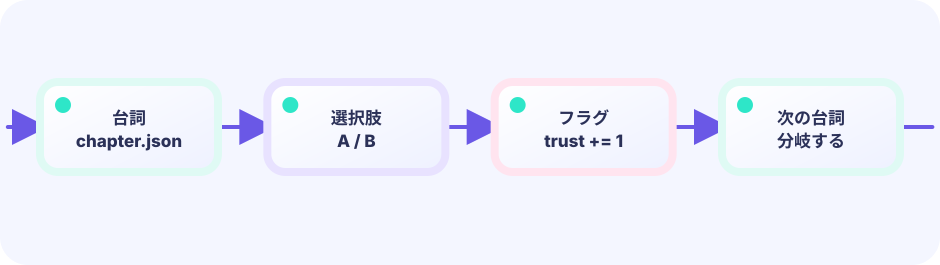

DATA
選択肢に変化させるフラグを持たせる
★★★☆☆ / PLAYABLE
3つの質問で勇気と優しさの値を増やし、選んだ履歴から異なる結末を作ります。
PLAY FIRST
3つの質問で勇気と優しさの値を増やし、選んだ履歴から異なる結末を作ります。

DEEP DIVE
選択肢は次の台詞だけでなく、braveやkindという物語の記録を変えます。最後に記録を調べれば、途中の選択を忘れずに結末へ反映できます。
選択肢に変化させるフラグを持たせる
選んだ瞬間に物語状態へ記録する
最後に複数フラグを調べて結末を選ぶ
SYSTEM LAB
選択肢は次の台詞だけでなく、braveやkindという物語の記録を変えます。最後に記録を調べれば、途中の選択を忘れずに結末へ反映できます。
START
UPDATE と DRAW の境界
キー・タッチを読み、位置・HP・ゲージ・タイマー・盤面を変えます。判定やキュー操作もこちらです。
入力 → ルール → game を更新できあがった game の値を読んで、絵・文字・エフェクトを置きます。game の値は変えません。
game を読む → ピクセルへ投影このページのルールは Update 側（または Update が呼ぶ純粋な関数）へ置き、Draw はその結果を表示するだけにします。
GO + EBITENGINE
3つの質問で勇気と優しさの値を増やし、選んだ履歴から異なる結末を作ります。
flags |= choice.Flag
if flags&kind != 0 {
ending = townLight
}選択肢は次の台詞だけでなく、braveやkindという物語の記録を変えます。最後に記録を調べれば、途中の選択を忘れずに結末へ反映できます。
最後に複数フラグを調べて結末を選ぶ
どちらでもない第3の選択と結末を追加しよう。
FEEDBACK